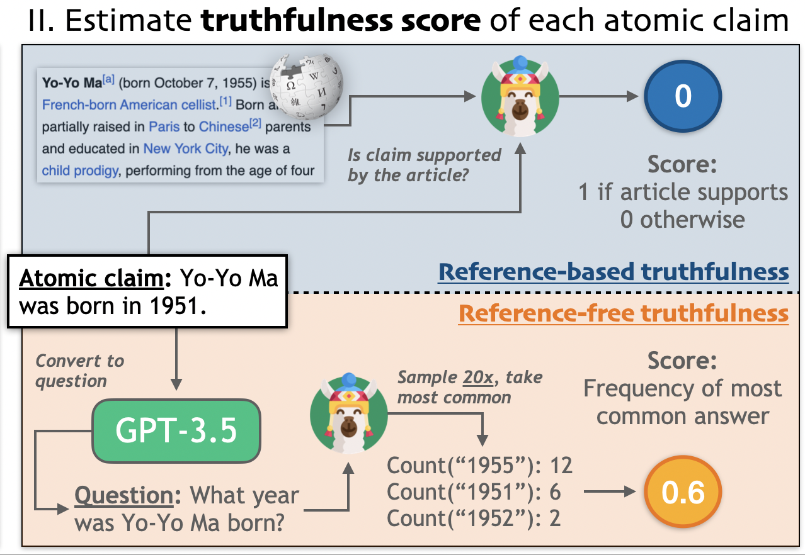
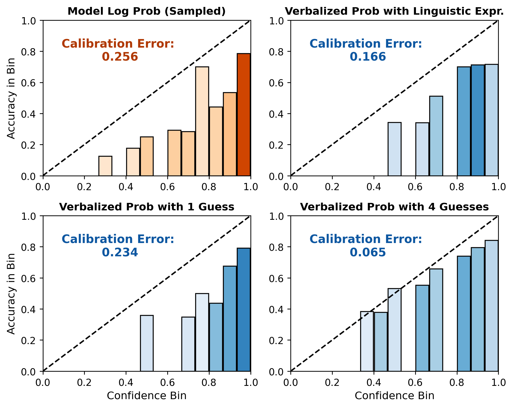
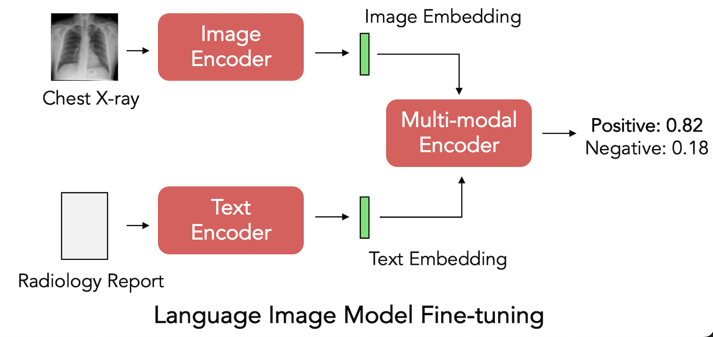

|
Katherine Tian
I'm a freshman from MIT Manipal pursuing a B.Tech. in Cyber Physical Systems. I am currently
working as a student researcher with Mars Rover Manipal
AI Research Team.
Previously, at MRM, I am working on Latent space manupulation using VAEs and GANs.
On campus, I am also working as a Campus Strategist for Perplexity leading growth efforts. I am also
part of various clubs like astronomy, Blank 101(public-speaking club).
Email /
Github /
Linkedin /
Twitter
|
|
Projects
|
|

|
GPT-2 based model from scratch
Katherine Tian*, Eric Mitchell*, Huaxiu Yao, Christopher D. Manning, Chelsea Finn
International Conference on Learning Representations (ICLR), 2024
[code]
|
|

|
Latent space manupulation in GANs
Katherine Tian*, Eric Mitchell*, Allan Zhou, Archit Sharma, Rafael Rafailov, Huaxiu
Yao, Chelsea Finn, Christopher D. Manning
Conference on Empirical Methods in Natural Language Processing (EMNLP), 2023
[code]
|
|

|
Deepfake Detection model
Jaehwan Jeong*, Katherine Tian*, Andrew Li, Sina Hartung, Fardad Behzadi, Juan Calle,
David Osayande, Michael Pohlen, Subathra Adithan, Pranav Rajpurkar
Medical Imaging with Deep Learning (MIDL), 2023
[code]
|
News
|
- Apr 30 - May 15, 2025, Second semester finals"
- May-june, 2025, Working at a software startup
|
|
{kind=link}